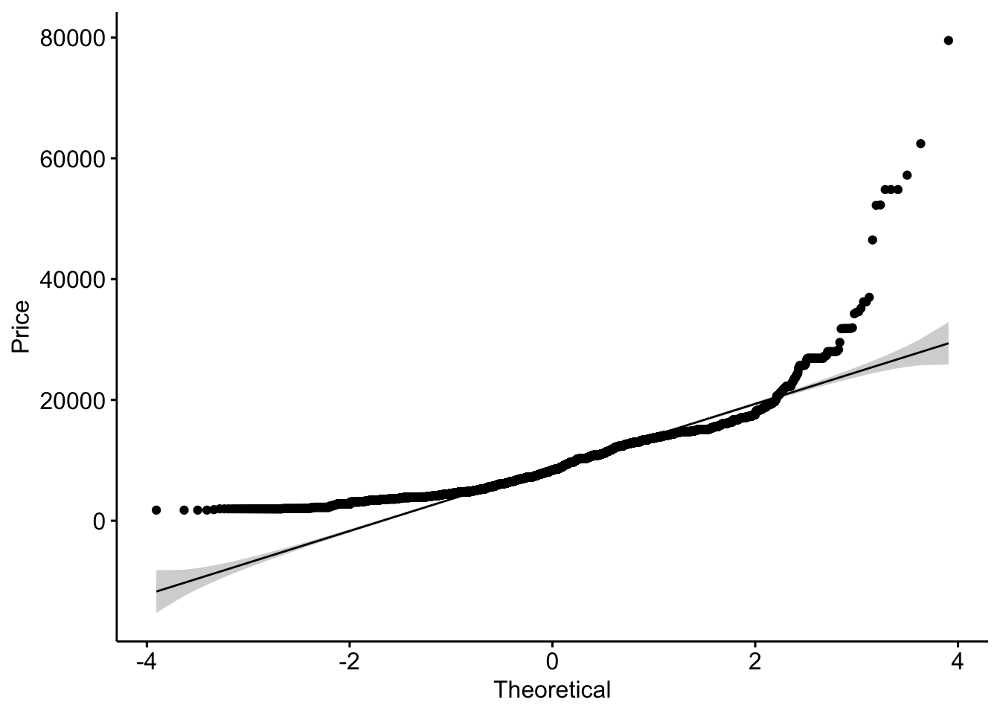

```{r}
library(tidyverse)
library(ggplot2)
library(gridExtra)
library(png)
library(grid)
library(lattice)
library(readxl)
library(lubridate)
library(scales)
library(stargazer)
library(lmtest)
library(tseries)
```STATISTICAL ANALYSIS OF FLIGHT FARES
INTRODUCTION
This project converts and extends a Python notebook on “Statistical Analysis & EDA for flight fare” using R and Quarto notebook. The original notebook can be found on Kaggle at https://www.kaggle.com/code/ananyanandi02/statistical-analysis-eda-for-flight-fare/notebook. The dataset contains 11 variables and 10683 observations. The variables are outlined below: 1. Airline: The name of the airline company. 2. Date of Journey: The date of the flight journey. 3. Source: The source or starting location of the flight. 4. Destination: The destination or final location of the flight. 5. Route: The flight route from the source to the destination. 6. Departure time: The time of departure for the flight. 7. Arrival time: The time of arrival at the destination. 8. Duration: The duration/length of the flight. 9. Total stops: The number of stops during the flight journey. 10. Additional info: Additional information about the flight. 11. Price: The fare or price of the flight ticket.
LOAD REQUIRED LIBRARIES
LOAD DATASET
```{r}
flight_data <- read_excel("data/Flight_data.xlsx")
```The flight dataset comprises 10,683 observations with 11 variables (10 independent variables and 1 target variable)
```{r}
dim(flight_data)
```[1] 10683 11To print the top 5 rows of our dataset
```{r}
head(flight_data, 5)
```# A tibble: 5 × 11
Airline Date_…¹ Source Desti…² Route Dep_T…³ Arriv…⁴ Durat…⁵ Total…⁶ Addit…⁷
<chr> <chr> <chr> <chr> <chr> <chr> <chr> <chr> <chr> <chr>
1 IndiGo 24/03/… Bangl… New De… BLR … 22:20 01:10 … 2h 50m non-st… No info
2 Air India 1/05/2… Kolka… Banglo… CCU … 05:50 13:15 7h 25m 2 stops No info
3 Jet Airw… 9/06/2… Delhi Cochin DEL … 09:25 04:25 … 19h 2 stops No info
4 IndiGo 12/05/… Kolka… Banglo… CCU … 18:05 23:30 5h 25m 1 stop No info
5 IndiGo 01/03/… Bangl… New De… BLR … 16:50 21:35 4h 45m 1 stop No info
# … with 1 more variable: Price <dbl>, and abbreviated variable names
# ¹Date_of_Journey, ²Destination, ³Dep_Time, ⁴Arrival_Time, ⁵Duration,
# ⁶Total_Stops, ⁷Additional_InfoEXPLORATORY DATA ANALYSIS
HANDLING MISSING DATA
To check for missing values and drop missing values
```{r}
print(colSums(is.na(flight_data)))
flight_data <- na.omit(flight_data)
``` Airline Date_of_Journey Source Destination Route
0 0 0 0 1
Dep_Time Arrival_Time Duration Total_Stops Additional_Info
0 0 0 1 0
Price
0 CLEAN DATE OF JOURNEY VARIABLE
To extract day, month, year, and weekday from Date of Journey
```{r}
flight_data$Journey_Day <- day(dmy(flight_data$Date_of_Journey))
flight_data$Journey_Month <- month(dmy(flight_data$Date_of_Journey))
flight_data$Journey_Year <- year(dmy(flight_data$Date_of_Journey))
flight_data$weekday <- wday(dmy(flight_data$Date_of_Journey), label = TRUE)
table(flight_data$Journey_Year)
table(flight_data$Journey_Month)
```
2019
10682
3 4 5 6
2724 1079 3465 3414 Remove the Date_of_Journey and Journey_Year column
```{r}
flight_data$Date_of_Journey <- NULL
flight_data$Journey_Year <- NULL
```“New Delhi” and “Delhi” seems to be same location.
```{r}
flight_data$Destination[flight_data$Destination == "New Delhi"] <- "Delhi"
```Now we can see the list of column names in our dataset
```{r}
names(flight_data)
``` [1] "Airline" "Source" "Destination" "Route"
[5] "Dep_Time" "Arrival_Time" "Duration" "Total_Stops"
[9] "Additional_Info" "Price" "Journey_Day" "Journey_Month"
[13] "weekday" CLEAN DURATION VARIABLE
Converting duration into minutes. Firstly we define duration function
```{r}
duration <- function(test) {
test <- gsub("\\s+", "", test) # remove white spaces
total <- strsplit(test, split = "[a-zA-Z]+")[[1]] # split the string into substrings
to <- total[1]
hrs <- as.numeric(gsub("[^[:digit:]]", "", to)) * 60 # extract the hours and convert to minutes
if (length(total) == 2) {
mint <- as.numeric(gsub("[^[:digit:]]", "", total[2])) # extract the minutes
hrs <- hrs + mint
}
return(as.character(hrs))
}
```Apply duration function to the “Duration” column
```{r}
flight_data$Duration <- sapply(flight_data$Duration, duration)
```Get number of unique values in “Duration” column
```{r}
n_distinct(flight_data$Duration)
```[1] 367CLEAN DEP TIME AND ARRIVAL TIME VARIABLE
To get whether its a morning,evening,night or afternoon flight from departure time & arrival time of the flight, we will define deparrtime function first
```{r}
deparrtime <- function(x) {
x <- gsub("\\s+", "", x) # remove white spaces
tt <- as.numeric(strsplit(x, split = ":")[[1]][1]) # extract the hour
if (tt >= 16 & tt < 21) {
x <- "Evening"
} else if (tt >= 21 | tt < 5) {
x <- "Night"
} else if (tt >= 5 & tt < 11) {
x <- "Morning"
} else if (tt >= 11 & tt < 16) {
x <- "Afternoon"
}
return(x)
}
```Then we will apply deparrtime function to the “Dep_Time” and “Arrival_Time” columns
```{r}
flight_data$Dep_Time <- sapply(flight_data$Dep_Time, deparrtime)
flight_data$Arrival_Time <- sapply(flight_data$Arrival_Time, deparrtime)
```CLEAN TOTAL STOPS VARIABLE
Firstly, define stops function to Convert total_stops to 0,1,2,3 etc.
```{r}
stops <- function(x) {
ifelse(x == 'non-stop', '0', substr(x, 1, 1))
}
```Then we apply stops function to the “Total_Stops” column
```{r}
flight_data$Total_Stops <- sapply(flight_data$Total_Stops, stops)
```FURTHER DATA CLEANING
Replace “No info” with “No Info” in the “Additional_Info” column
Drop the “Route” column
```{r}
flight_data$Additional_Info <- ifelse(flight_data$Additional_Info == "No info", "No Info", flight_data$Additional_Info)
flight_data <- flight_data[, !(names(flight_data) %in% c("Route"))]
```View the first two rows of the data and get information about the data frame
```{r}
head(flight_data, 2)
str(flight_data)
```# A tibble: 2 × 12
Airline Source Desti…¹ Dep_T…² Arriv…³ Durat…⁴ Total…⁵ Addit…⁶ Price Journ…⁷
<chr> <chr> <chr> <chr> <chr> <chr> <chr> <chr> <dbl> <int>
1 IndiGo Bangl… Delhi Night Night 170 0 No Info 3897 24
2 Air India Kolka… Banglo… Morning Aftern… 445 2 No Info 7662 1
# … with 2 more variables: Journey_Month <dbl>, weekday <ord>, and abbreviated
# variable names ¹Destination, ²Dep_Time, ³Arrival_Time, ⁴Duration,
# ⁵Total_Stops, ⁶Additional_Info, ⁷Journey_Day
tibble [10,682 × 12] (S3: tbl_df/tbl/data.frame)
$ Airline : chr [1:10682] "IndiGo" "Air India" "Jet Airways" "IndiGo" ...
$ Source : chr [1:10682] "Banglore" "Kolkata" "Delhi" "Kolkata" ...
$ Destination : chr [1:10682] "Delhi" "Banglore" "Cochin" "Banglore" ...
$ Dep_Time : Named chr [1:10682] "Night" "Morning" "Morning" "Evening" ...
..- attr(*, "names")= chr [1:10682] "22:20" "05:50" "09:25" "18:05" ...
$ Arrival_Time : Named chr [1:10682] "Night" "Afternoon" "Night" "Night" ...
..- attr(*, "names")= chr [1:10682] "01:10 22 Mar" "13:15" "04:25 10 Jun" "23:30" ...
$ Duration : Named chr [1:10682] "170" "445" "1140" "325" ...
..- attr(*, "names")= chr [1:10682] "2h 50m" "7h 25m" "19h" "5h 25m" ...
$ Total_Stops : Named chr [1:10682] "0" "2" "2" "1" ...
..- attr(*, "names")= chr [1:10682] "non-stop" "2 stops" "2 stops" "1 stop" ...
$ Additional_Info: chr [1:10682] "No Info" "No Info" "No Info" "No Info" ...
$ Price : num [1:10682] 3897 7662 13882 6218 13302 ...
$ Journey_Day : int [1:10682] 24 1 9 12 1 24 12 1 12 27 ...
$ Journey_Month : num [1:10682] 3 5 6 5 3 6 3 3 3 5 ...
$ weekday : Ord.factor w/ 7 levels "Sun"<"Mon"<"Tue"<..: 1 4 1 1 6 2 3 6 3 2 ...
- attr(*, "na.action")= 'omit' Named int 9040
..- attr(*, "names")= chr "9040"Make a copy of the data frame
```{r}
flight_df <- flight_data
```Convert columns to the specified data types
```{r}
flight_df$Duration <- as.integer(flight_df$Duration)
for (col in colnames(flight_df)) {
if (is.character(flight_df[[col]])) {
flight_df[[col]] <- as.factor(flight_df[[col]])
}
}
```Replace values in the “Journey_Month” column
```{r}
flight_df$Journey_Month <- factor(flight_df$Journey_Month, levels = c(3, 4, 5, 6), labels = c("March", "April", "May", "June"))
```This plot visualizes the total each month with total fare per month
```{r}
v1 <- ggplot(flight_df, aes(x = Journey_Month, y = Price, fill = Journey_Month)) +
geom_bar(stat = "summary", fun = sum) +
ggtitle("Monthv/sPrice") +
ylab("Price") +
xlab("Month of booking") +
scale_fill_brewer(palette = "Set1") + # add color scale
scale_y_continuous(labels = function(x) format(x, scientific = FALSE),
breaks = seq(0, 30000000, 5000000)) +
theme(axis.text.x = element_text(angle = 80, vjust = 0.5, hjust=1))
v1
```
Firstly create a data frame from the top_month data then plot a bar plot
```{r}
top_month <- head(sort(table(flight_df$Journey_Month), decreasing = TRUE), 10)
top_month_df <- data.frame(month = names(top_month), count = top_month)
ggplot(top_month_df, aes(x = month, y = count.Freq, fill = month)) +
geom_bar(stat = "identity") +
ggtitle("Count of flights per month") +
geom_text(aes(label = count.Freq), vjust = -0.5, color = "black", size = 4)+
ylab("Number of Bookings") +
xlab("Month") +
theme(axis.text.x = element_text(angle = 90, vjust = 0.5, hjust=1))
```
Compute the average price for each month then create a bar plot showing the average price for each month
```{r}
monthly_avg <- flight_df %>%
group_by(Journey_Month) %>%
summarise(avg_price = mean(Price))
ggplot(monthly_avg, aes(x = Journey_Month, y = avg_price, fill = Journey_Month)) +
geom_bar(stat = "identity") +
ggtitle("Journey Month vs Average Fare") +
xlab("Month of Journey") +
ylab("Average Fare") +
theme_bw()
```
Create a box plot showing the distribution of prices for each destination
```{r}
ggplot(flight_df, aes(x = Destination, y = Price, fill = Destination)) +
geom_boxplot() +
ggtitle("Destination vs Average Price") +
xlab("Destination") +
ylab("Average Price") +
theme_bw() +
coord_flip()
```
```{r}
ggplot(flight_data %>% arrange(desc(Price)), aes(Source, Price, fill = Source)) +
geom_boxplot() +
theme_bw() +
labs(title = "Source vs Average Price")
```
```{r}
ggplot(flight_data, aes(Airline, fill= Airline)) +
geom_bar() +
theme_bw() +
labs(title = "Count of flights with different Airlines",
x = "Airline",
y = "Count of flights") +
theme(axis.text.x = element_text(angle = 90, vjust = 0.5)) +
geom_text(stat = "count", aes(label = ..count..), vjust = -0.5)
```
Outliers can be spotted in flight prices.
```{r}
ggplot(flight_data %>% arrange(desc(Price)), aes(Airline, Price, fill= Airline)) +
geom_boxplot() +
theme_bw() +
labs(title = "Airline vs Average Price")
```
```{r}
ggplot(flight_df, aes(Duration, Price)) +
geom_point() +
theme_bw() +
labs(title = "Duration vs Average Price")
```
```{r}
ggplot(flight_data, aes(Dep_Time, Price, fill= Dep_Time)) +
geom_bar(stat = "summary", fun = "mean") +
theme_bw() +
labs(title = "Departure Time vs Average Price",
x = "Time of departure",
y = "Price") +
theme(axis.text.x = element_text(angle = 90, vjust = 0.5))
```
```{r}
top_time <- flight_data %>%
count(Dep_Time) %>%
top_n(10, n)
ggplot(top_time, aes(Dep_Time, n)) +
geom_bar(stat = "identity", fill = "purple") +
geom_text(aes(label = n), vjust = -0.5, color = "black", size = 4) +
theme_bw() +
labs(title = "Top 10 Departure Time vs Count of Flights",
x = "Time of departure",
y = "Count of flights") +
theme(axis.text.x = element_text(angle = 90, vjust = 0.5))
```
```{r}
ggplot(flight_data, aes(Arrival_Time, Price)) +
geom_bar(stat = "summary", fun = "mean", fill = "red") +
theme_bw() +
labs(title = "Time of Arrival vs Average Price",
x = "Arrival Time",
y = "Price") +
theme(axis.text.x = element_text(angle = 90, vjust = 0.5))
```
```{r}
ggplot(flight_data, aes(Total_Stops, Price)) +
geom_bar(stat = "summary", fun = "mean", fill = "steelblue") +
theme_bw() +
labs(title = "Number of Stops vs Average Price",
x = "Total Stops",
y = "Price") +
theme(axis.text.x = element_text(angle = 90, vjust = 0.5))
```
```{r}
ggplot(flight_data, aes(weekday, Price)) +
geom_bar(stat = "summary", fun = "mean", fill= "brown") +
theme_bw() +
labs(title = "Weekday vs Average Price", x = "Weekday", y = "Price") +
theme(axis.text.x = element_text(angle = 90, vjust = 0.5))
```
CORRELATION ANALYSIS
Adding additional libraries
```{r}
library(ggpubr)
library(ggExtra)
library(devtools)
``````{r}
head(flight_data, 5)
```# A tibble: 5 × 12
Airline Source Desti…¹ Dep_T…² Arriv…³ Durat…⁴ Total…⁵ Addit…⁶ Price Journ…⁷
<chr> <chr> <chr> <chr> <chr> <chr> <chr> <chr> <dbl> <int>
1 IndiGo Bangl… Delhi Night Night 170 0 No Info 3897 24
2 Air India Kolka… Banglo… Morning Aftern… 445 2 No Info 7662 1
3 Jet Airw… Delhi Cochin Morning Night 1140 2 No Info 13882 9
4 IndiGo Kolka… Banglo… Evening Night 325 1 No Info 6218 12
5 IndiGo Bangl… Delhi Evening Night 285 1 No Info 13302 1
# … with 2 more variables: Journey_Month <dbl>, weekday <ord>, and abbreviated
# variable names ¹Destination, ²Dep_Time, ³Arrival_Time, ⁴Duration,
# ⁵Total_Stops, ⁶Additional_Info, ⁷Journey_Day```{r}
str(flight_data)
```tibble [10,682 × 12] (S3: tbl_df/tbl/data.frame)
$ Airline : chr [1:10682] "IndiGo" "Air India" "Jet Airways" "IndiGo" ...
$ Source : chr [1:10682] "Banglore" "Kolkata" "Delhi" "Kolkata" ...
$ Destination : chr [1:10682] "Delhi" "Banglore" "Cochin" "Banglore" ...
$ Dep_Time : Named chr [1:10682] "Night" "Morning" "Morning" "Evening" ...
..- attr(*, "names")= chr [1:10682] "22:20" "05:50" "09:25" "18:05" ...
$ Arrival_Time : Named chr [1:10682] "Night" "Afternoon" "Night" "Night" ...
..- attr(*, "names")= chr [1:10682] "01:10 22 Mar" "13:15" "04:25 10 Jun" "23:30" ...
$ Duration : Named chr [1:10682] "170" "445" "1140" "325" ...
..- attr(*, "names")= chr [1:10682] "2h 50m" "7h 25m" "19h" "5h 25m" ...
$ Total_Stops : Named chr [1:10682] "0" "2" "2" "1" ...
..- attr(*, "names")= chr [1:10682] "non-stop" "2 stops" "2 stops" "1 stop" ...
$ Additional_Info: chr [1:10682] "No Info" "No Info" "No Info" "No Info" ...
$ Price : num [1:10682] 3897 7662 13882 6218 13302 ...
$ Journey_Day : int [1:10682] 24 1 9 12 1 24 12 1 12 27 ...
$ Journey_Month : num [1:10682] 3 5 6 5 3 6 3 3 3 5 ...
$ weekday : Ord.factor w/ 7 levels "Sun"<"Mon"<"Tue"<..: 1 4 1 1 6 2 3 6 3 2 ...
- attr(*, "na.action")= 'omit' Named int 9040
..- attr(*, "names")= chr "9040"```{r}
flight_data$Duration <- as.integer(flight_data$Duration)
```Plotting the correlation between Duration and Price
```{r}
ggplot(flight_data, aes(x = Duration, y = Price)) +
geom_point() +
geom_smooth(method = "lm", color = "red") +
labs(x = "Duration (in minutes)", y = "Price")
```
From the plot above, the relationship might be linear. We might need to check if the data from each of the 2 variables follow a normal distribution?
Shapiro test would have been perfect for this but to use it, sample size must be between 3 and 5000.
We therefore look at the normality plot using the function: ggpubr::ggqqplot()
Plotting to check for normality
```{r}
ggqqplot(flight_data$Duration, ylab = "Duration")
``````{r}
ggqqplot(flight_data$Price, ylab = "Price")
```
From the normality plots, we conclude that both populations may come from normal distributions.
correlation coefficient interpretation
-1 indicates a strong negative correlation : this means that every time x increases, y decreases
0 means that there is no association between the two variables (x and y)
1 indicates a strong positive correlation : this means that y increases with x
Pearson correlation test
```{r}
res <- cor.test(flight_data$Duration, flight_data$Price, method = "pearson")
res
```
Pearson's product-moment correlation
data: flight_data$Duration and flight_data$Price
t = 60.723, df = 10680, p-value < 2.2e-16
alternative hypothesis: true correlation is not equal to 0
95 percent confidence interval:
0.4923698 0.5205664
sample estimates:
cor
0.5066036 The p-value of the test is 2.2e-16, which is less than the significance level alpha = 0.05.
We can conclude that Duration and Price are significantly correlated with a correlation coefficient of 0.5103211 and p-value of < 2.2e-16.
Kendall rank correlation test
```{r}
res2 <- cor.test(flight_data$Duration, flight_data$Price, method="kendall")
res2
```
Kendall's rank correlation tau
data: flight_data$Duration and flight_data$Price
z = 76.873, p-value < 2.2e-16
alternative hypothesis: true tau is not equal to 0
sample estimates:
tau
0.4996434 NOTE: tau is the Kendall correlation coefficient. The correlation coefficient between Duration and Price is 0.500113 and the p-value is < 2.2e-16.
Spearman rank correlation coefficient
```{r}
res3 <-cor.test(flight_data$Duration, flight_data$Price, method = "spearman")
res3
```
Spearman's rank correlation rho
data: flight_data$Duration and flight_data$Price
S = 6.239e+10, p-value < 2.2e-16
alternative hypothesis: true rho is not equal to 0
sample estimates:
rho
0.6928812 NOTE: rho is the Spearman’s correlation coefficient. The correlation coefficient between Duration and Price is 0.69344 and the p-value is < 2.2e-16.
Correlation Plot with Frequency Distribution
```{r}
p <- ggplot(flight_data, aes(x = Duration, y = Price)) +
geom_point() +
geom_smooth(method = "lm", se = FALSE) +
stat_cor(aes(label = paste("r = ", round(..r.., 2), "\n", "p = ",
round(..p.., 2))), label.x = 0.9, label.y = 0.9,
size = 4, color = "red")
ggMarginal(p, type = "histogram", bins = 20)
```
We have a p-value < 0.05, hence we accept H1 and decide the target variable and continuous independent variable are correlated. r = 0.51 means they are moderately related.
REGRESSION ANALYSIS
Further Data Preparation
```{r}
flight_df$weekday <- as.character(flight_df$weekday)
# let's generate logarithm of flight prices and duration
colnames(flight_df)
flight_df$lnPrice = log(flight_df$Price)
flight_df$lnDuration = log(flight_df$Duration)
``` [1] "Airline" "Source" "Destination" "Dep_Time"
[5] "Arrival_Time" "Duration" "Total_Stops" "Additional_Info"
[9] "Price" "Journey_Day" "Journey_Month" "weekday" General model with simple linear regression
```{r}
flight_reg1 = lm(lnPrice~Airline+Source+Dep_Time
+Arrival_Time+Duration+Total_Stops
+Additional_Info+Journey_Day+Journey_Month
+weekday, data=flight_df)
```Breusch’s and Pagan’s test
H0: homoscedasticity
H1: heteroscedasticity
```{r}
bptest(flight_reg1, studentize=TRUE)
```
studentized Breusch-Pagan test
data: flight_reg1
BP = 1531, df = 44, p-value < 2.2e-16P-value is less than 0.05, therefore we do not reject the null hypothesis implying variance of residuals is constant.
Is the error term of the model normally distributed?
```{r}
jarque.bera.test(flight_reg1$residuals)
```
Jarque Bera Test
data: flight_reg1$residuals
X-squared = 1629.8, df = 2, p-value < 2.2e-16With p-value < 0.05, we do not reject the null hypothesis stating that Residuals are normally distributed.
Let’s fit a second model using Duration in logarithm
```{r}
flight_reg2 = lm(lnPrice~Airline+Source+Dep_Time
+Arrival_Time+lnDuration+Total_Stops
+Additional_Info+Journey_Day+Journey_Month
+weekday, data=flight_df)
```Let’s fit a third model introducing a new feature Source-Destination ( a combination of Source& Destination as a single feature) while excluding insignificant features like Source and Dep_time variables
```{r}
flight_df$SourceDest <- paste(flight_df$Source,flight_df$Destination,sep = "-")
flight_reg3 = lm(lnPrice~Airline+SourceDest+Arrival_Time
+Total_Stops+lnDuration+Journey_Day+Additional_Info
+Journey_Day+Journey_Month+weekday, data
=flight_df)
```Let’s fit a fourth model excluding Additional_info variable
```{r}
flight_reg4 = lm(lnPrice~Airline+SourceDest+Arrival_Time+
Total_Stops+Journey_Day+lnDuration+Journey_Day+
Journey_Month+weekday, data=flight_df)
```All fitted regression models
```{r}
stargazer(flight_reg1, flight_reg2, flight_reg3,flight_reg4, type="text"
,align=TRUE, style="default", df=FALSE)
```
=========================================================================================
Dependent variable:
---------------------------------------------
lnPrice
(1) (2) (3) (4)
-----------------------------------------------------------------------------------------
AirlineAir India 0.260*** 0.249*** 0.249*** 0.236***
(0.015) (0.015) (0.015) (0.016)
AirlineGoAir -0.016 -0.013 -0.015 -0.019
(0.022) (0.021) (0.021) (0.023)
AirlineIndiGo 0.048*** 0.049*** 0.048*** 0.045***
(0.014) (0.014) (0.014) (0.016)
AirlineJet Airways 0.663*** 0.654*** 0.654*** 0.491***
(0.015) (0.015) (0.015) (0.015)
AirlineJet Airways Business 1.611*** 1.626*** 1.627*** 1.760***
(0.122) (0.121) (0.121) (0.106)
AirlineMultiple carriers 0.417*** 0.413*** 0.410*** 0.387***
(0.016) (0.016) (0.016) (0.017)
AirlineMultiple carriers Premium economy 0.456*** 0.454*** 0.448*** 0.459***
(0.067) (0.067) (0.067) (0.073)
AirlineSpiceJet -0.062*** -0.059*** -0.061*** -0.095***
(0.017) (0.017) (0.017) (0.017)
AirlineTrujet -0.276 -0.263 -0.259 -0.296
(0.234) (0.234) (0.234) (0.256)
AirlineVistara 0.319*** 0.307*** 0.307*** 0.304***
(0.017) (0.017) (0.017) (0.019)
AirlineVistara Premium economy 0.522*** 0.520*** 0.521*** 0.499***
(0.136) (0.135) (0.135) (0.148)
SourceChennai -0.064*** -0.061***
(0.014) (0.014)
SourceDelhi 0.044*** 0.044***
(0.009) (0.009)
SourceKolkata 0.020** 0.018**
(0.008) (0.008)
SourceMumbai -0.381*** -0.361***
(0.010) (0.011)
Dep_TimeEvening 0.004 0.001
(0.007) (0.007)
Dep_TimeMorning -0.009 -0.011*
(0.006) (0.006)
Dep_TimeNight 0.004 0.001
(0.008) (0.008)
SourceDestChennai-Kolkata -0.060*** -0.072***
(0.014) (0.015)
SourceDestDelhi-Cochin 0.044*** 0.027***
(0.009) (0.009)
SourceDestKolkata-Banglore 0.019** 0.007
(0.008) (0.009)
SourceDestMumbai-Hyderabad -0.361*** -0.376***
(0.011) (0.012)
Arrival_TimeEvening 0.029*** 0.028*** 0.030*** 0.043***
(0.007) (0.007) (0.007) (0.008)
Arrival_TimeMorning 0.008 0.005 0.004 0.016**
(0.008) (0.008) (0.008) (0.008)
Arrival_TimeNight -0.028*** -0.027*** -0.023*** -0.012*
(0.007) (0.007) (0.007) (0.007)
Duration 0.00000
(0.00001)
lnDuration 0.034*** 0.034*** 0.021***
(0.006) (0.006) (0.007)
Total_Stops1 0.425*** 0.382*** 0.380*** 0.402***
(0.009) (0.011) (0.011) (0.012)
Total_Stops2 0.606*** 0.550*** 0.546*** 0.609***
(0.012) (0.015) (0.015) (0.016)
Total_Stops3 0.732*** 0.668*** 0.663*** 0.708***
(0.037) (0.038) (0.038) (0.041)
Total_Stops4 0.629** 0.551** 0.546** 0.744***
(0.253) (0.252) (0.253) (0.256)
Additional_Info1 Short layover 0.342 0.355 0.343
(0.240) (0.239) (0.239)
Additional_Info2 Long layover 0.295 0.292 0.285
(0.240) (0.239) (0.239)
Additional_InfoBusiness class 0.070 0.080 0.070
(0.157) (0.157) (0.157)
Additional_InfoChange airports -0.124 -0.112 -0.118
(0.110) (0.109) (0.109)
Additional_InfoIn-flight meal not included -0.628*** -0.625*** -0.629***
(0.055) (0.055) (0.055)
Additional_InfoNo check-in baggage included -0.384*** -0.382*** -0.388***
(0.057) (0.057) (0.057)
Additional_InfoNo Info -0.305*** -0.300*** -0.304***
(0.055) (0.055) (0.055)
Additional_InfoRed-eye flight 0.297 0.298 0.296
(0.240) (0.240) (0.240)
Journey_Day -0.007*** -0.007*** -0.007*** -0.008***
(0.0003) (0.0003) (0.0003) (0.0003)
Journey_MonthApril -0.284*** -0.281*** -0.281*** -0.294***
(0.009) (0.009) (0.009) (0.010)
Journey_MonthMay -0.136*** -0.135*** -0.135*** -0.145***
(0.007) (0.007) (0.007) (0.007)
Journey_MonthJune -0.168*** -0.167*** -0.166*** -0.180***
(0.007) (0.007) (0.007) (0.007)
weekdayMon -0.128*** -0.129*** -0.128*** -0.145***
(0.010) (0.010) (0.010) (0.011)
weekdaySat -0.097*** -0.098*** -0.098*** -0.120***
(0.010) (0.010) (0.010) (0.011)
weekdaySun -0.062*** -0.063*** -0.063*** -0.078***
(0.010) (0.010) (0.010) (0.011)
weekdayThu -0.161*** -0.161*** -0.161*** -0.184***
(0.010) (0.010) (0.010) (0.011)
weekdayTue -0.078*** -0.080*** -0.080*** -0.086***
(0.011) (0.011) (0.011) (0.012)
weekdayWed -0.148*** -0.149*** -0.149*** -0.161***
(0.010) (0.010) (0.010) (0.011)
Constant 9.027*** 8.854*** 8.852*** 8.655***
(0.056) (0.064) (0.064) (0.037)
-----------------------------------------------------------------------------------------
Observations 10,682 10,682 10,682 10,682
R2 0.794 0.795 0.795 0.754
Adjusted R2 0.793 0.794 0.794 0.754
Residual Std. Error 0.233 0.233 0.233 0.255
F Statistic 932.995*** 936.560*** 1,004.702*** 990.947***
=========================================================================================
Note: *p<0.1; **p<0.05; ***p<0.01lnPrice = β0 + β1Airline + β2SourceDest + β3Arrival_Time + β4Total_Stops + β5lnDuration + β6Journey_Day + β7Journey_Month + β8Additional_Info + β9weekday + εi
The third model seem to be a better fit as it has a similar R2 of 79% as the first and second model thereby explaining same amount of variability after excluding insignificant variable such as Departure time, and combining Source& Destination as a single feature.
In comparison to March and Friday,prices are lower on other months and week days respectively. Additional number of stops significantly increase flight prices.
CONCLUSION
This project extensively used R to carry out data cleaning, feature engineering, exploratory data analysis using data visualization and correlation analysis, as well as data modelling using simple linear regression model-lm(). The dataset had a total of 10,682 observations with 10 independent variables and a continuous dependent variable (flight prices).
Variables such as weekday, month, journey day, total stops, duration, arrival time, source to destination, and airlines significantly impact flight prices.